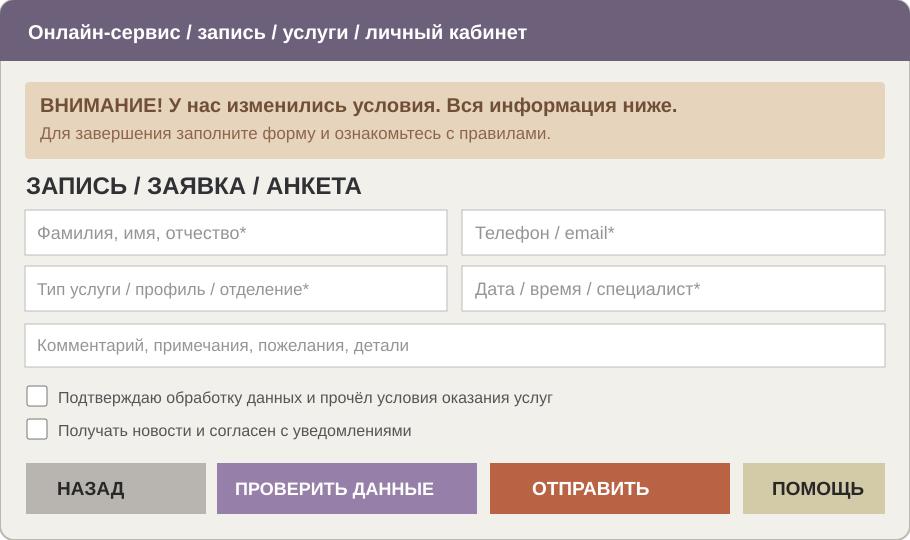

Работает — не значит удобно
Программа может правильно принимать заявки, но человеку всё равно трудно ею пользоваться.
01
Непонятно, с чего начать
Главное действие теряется среди других.
02
Слишком много решений
Человек тратит время на поиск нужного.
03
Нет ясного результата
После отправки формы непонятно, выполнена ли задача.
